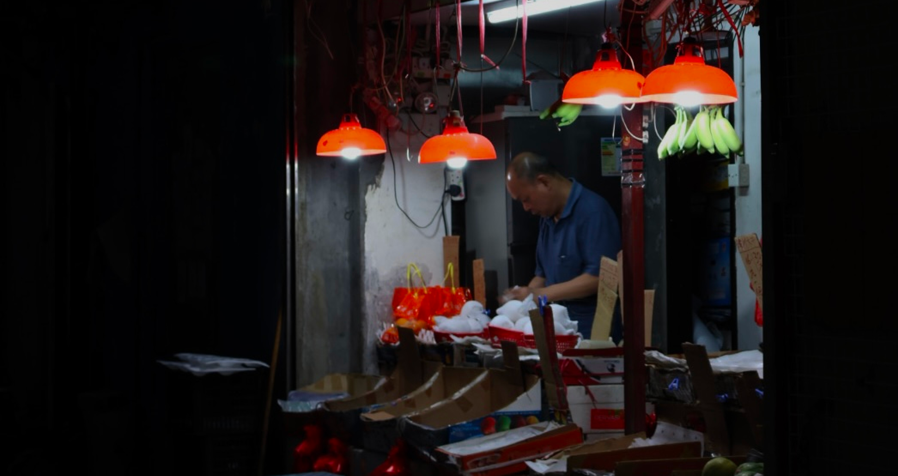
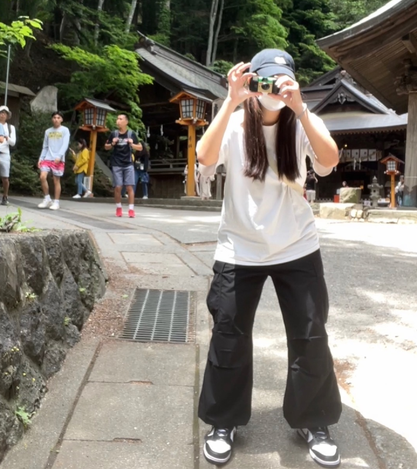
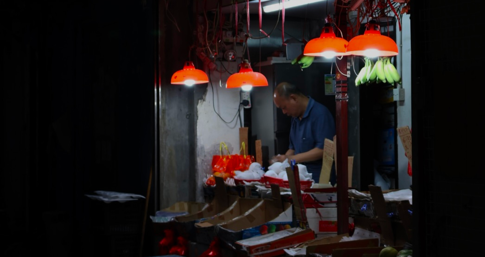
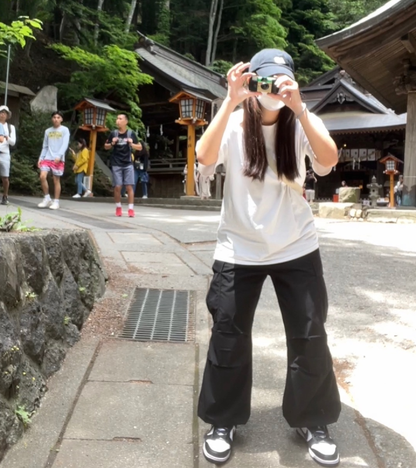

“ Moments lost
Memories stored ”
“ Moments lost
Memories stored ”
ART WORK
ABOUT US
Color motion picture film refers both to unexposed
color photographic film in a format suitable for use in a
motion picture camera , and to finished motion picture film, ready for use in a projector,
which bears images in color.
“ Happiness is like a cat. If you try to coax it or call it, it will
avoid you. It will never come. But if you pay no attention to it and go
about your business, you'll find it rubbing up against your legs and
jumping into your lap.”
“ As a traveler, for me travel makes one modest. You see what a tiny
place you occupy in the world. ”
“ The world is not black and white; there are lots of shades of grey.
There are good things and bad things in every era, and I think it's kind
of very blindfolded to say one era was wonderful, as it was wonderful,
but there were a lot of bad things as well. “
Dailies in film are the raw, unedited footage shot during that day.
Sometimes in animation, they can also be called “rushes” or “sweat box
sessions.
Panchromatic black and white film, also known as pan film, is sensitized
to all colors of the visible spectrum as well as the shorter
ultra-violet (UV) wavelengths during the manufacturing process. Pan film
does produce photos with more grey tones and a truer feel of the
original colors.
Y2K is the shorthand term for "the year 2000." Y2K was commonly used to
refer to a widespread computer programming shortcut that was expected to
cause extensive havoc as the year changed from 1999 to 2000.
TAN SHING YUE
CHAN JIA CHIEN
CHECK OUT OUR WORK !
 


